- Format
- 3.5 × 5 in, saddle-stitched
- Editions
- 2019, 2020, 2025, 2026; 3,600 copies in all
- Color
- Navy C89 M75 Y15 K62; yellow C4 M0 Y84 K0, unchanged since 2020
- Type
- Bebas Neue, Helvetica, Bodoni 72 Oldstyle
- Result
- The 2026 first run sold out within seven weeks
Design
Brand, print and digital systems for an independent newsroom and the products that fund it. Every case study carries its full specification and its credits.

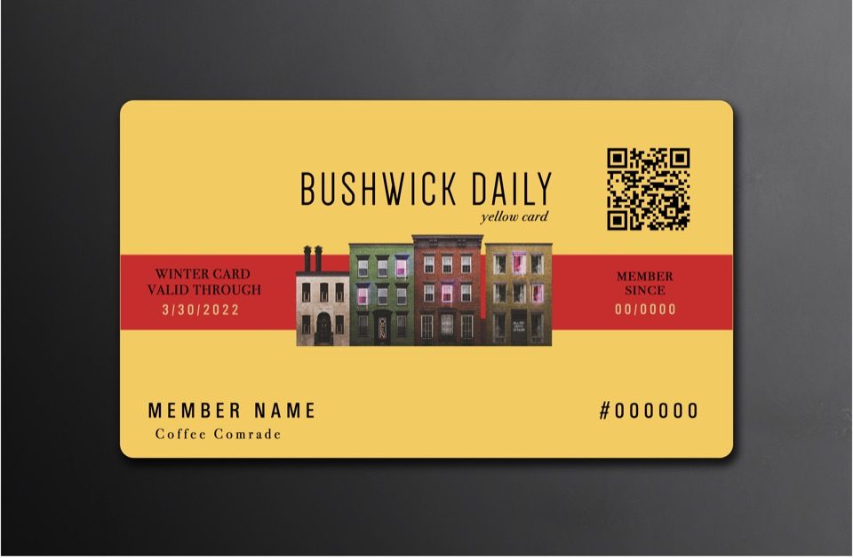

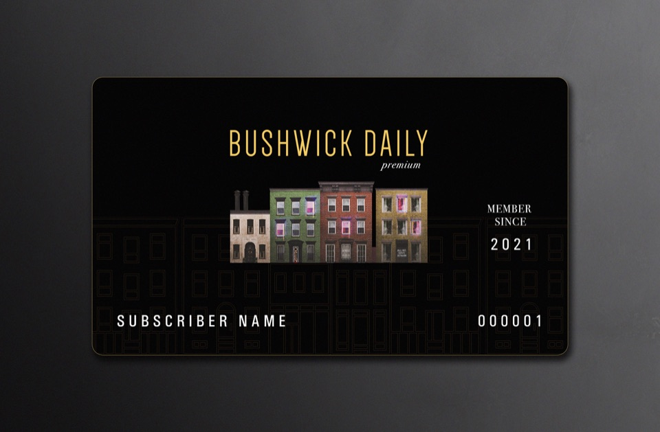

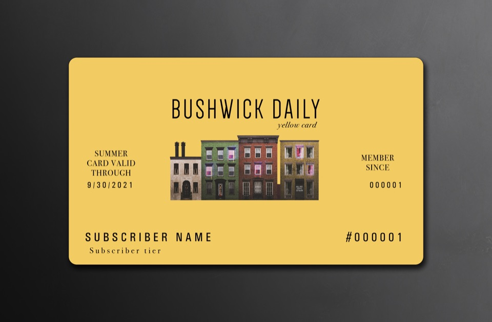
- Format
- A digital card, issued by email as an image; artwork on a 6000 × 3933 px canvas at 300 ppi
- Type
- Univers Condensed for the member’s name, number and dates; Bodoni 72 Book and Book Italic for labels, tier and “yellow card”
- Color
- Card yellow #F3CB63; winter band #C62E2E; date gold #DBC789; black type
- System
- One variable-data template (name, member number, tier, member since), merged for each member and reissued by season; the winter edition adds a QR code to the partner directory
- Program
- Three membership tiers, $10, $25 and $50 a month; fourteen partner businesses; 242 cards sent in the winter round

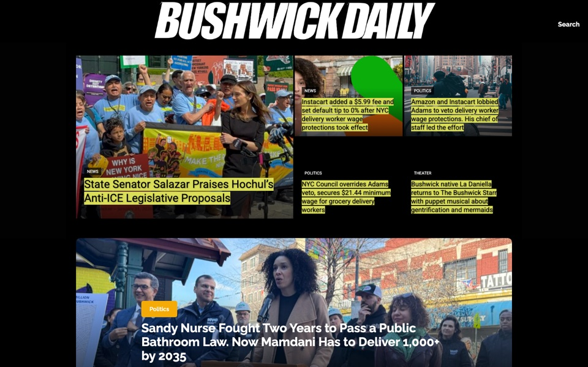

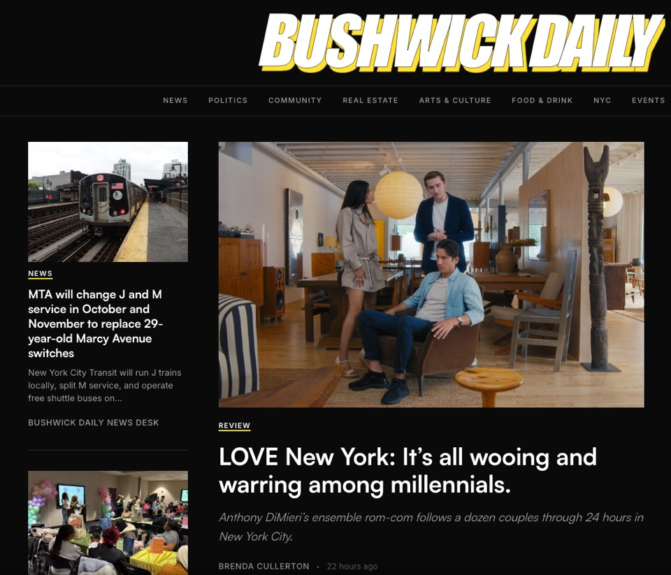

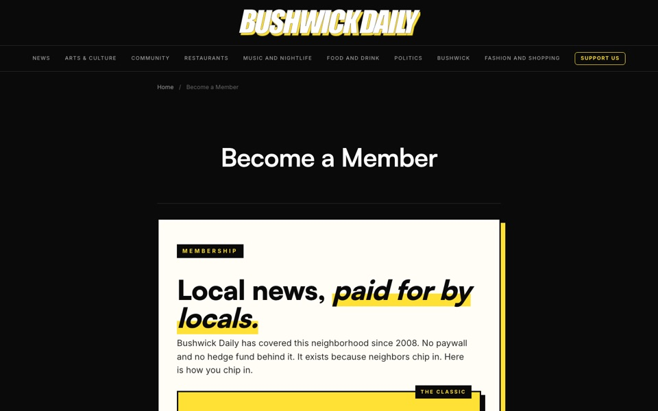

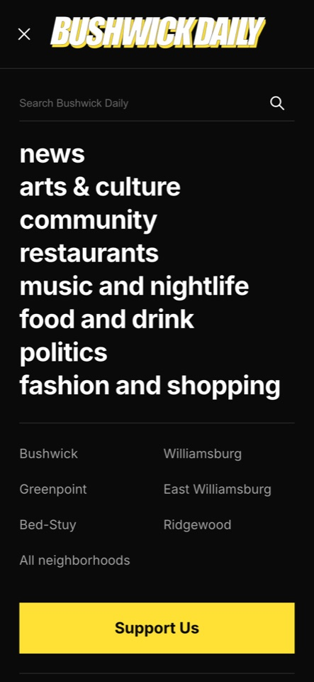
- Platform
- WordPress on tagDiv Newspaper 12.6.8, with a child theme of 14 page templates and 5 shared parts, and 27 custom plugins
- Type
- Satoshi for headlines and article text; Inter for the interface
- Color
- Ground #0a0a0a; surfaces #141414 and #1a1a1a; text #ffffff, #a0a0a0, #666666; one accent, #ffe135
- Grid
- Front page in three columns: 250 px, fluid, 340 px from 1280 px wide; one column on phones, lede first
- Breakpoints
- 640, 768, 1024, 1280 px

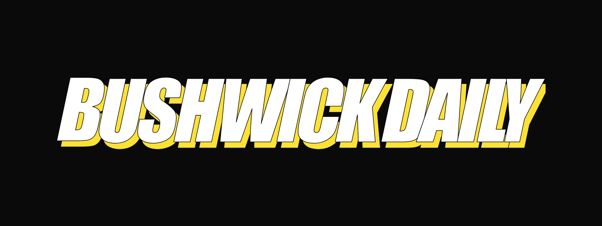

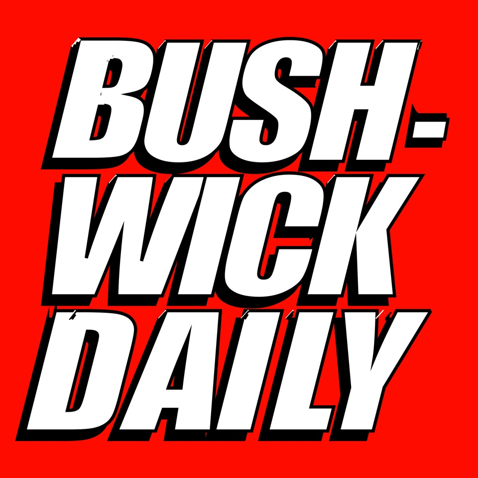


- Wordmark
- Outlined SVG, 443 × 65 units: white face, 0.5-unit black hairline, a hard #ffe135 offset of 4 × 5 units with no blur
- Monogram
- The wordmark’s own B and D; eight variants for dark, light and yellow grounds; a favicon master with a 1.5× offset for small sizes
- Motion
- “Hard Light,” 4.2 s at 30 fps in 16:9, 1:1 and 9:16; H.264 at CRF 18 with 180° shutter motion blur
- Square logo
- Red #ff0c00 ground, white type with a black offset; Illustrator, all type outlined

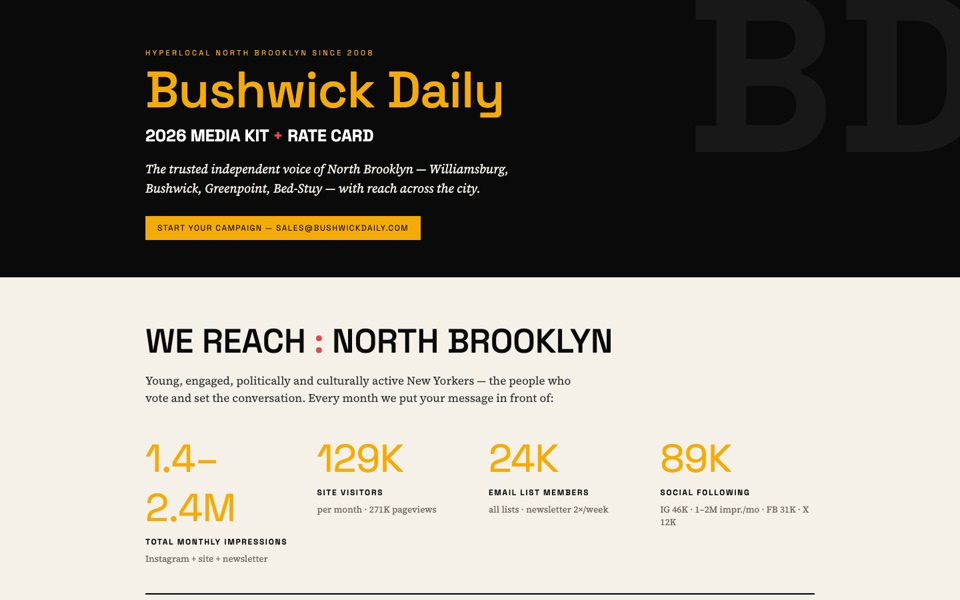
- Format
- 8.5 × 11 in, three pages, plus a responsive web edition
- Type
- Space Grotesk for display and interface; Source Serif 4 for text
- Color
- Ink #0a0a0a, gold #f5ab07, yellow #ffe135, cream #f5f1e8, pink #f7d9d3
- Grid
- A four-column audience band; two-column rate card and specification grid

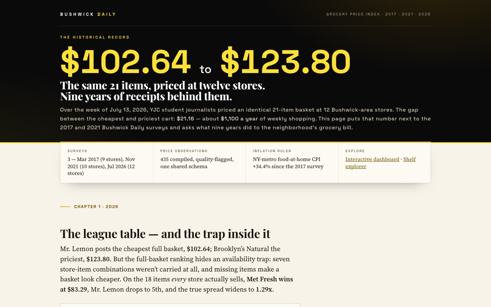
- Charts
- 18: nine static figures in matplotlib, six Chart.js 4.4.3 panels, three D3 7.9.0 explorers
- Artboards
- Wide 704 px and narrow 400 px; SVG with @2x PNG fallback
- Palette
- 15 store colors and 6 category colors, validated on #f7f3e9 paper
- Type
- Playfair Display, Source Serif 4, Space Grotesk

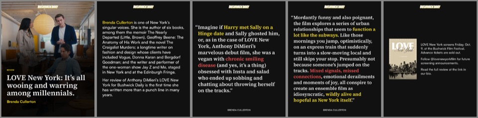
- Slides
- 1080 × 1350 (4:5); up to ten per carousel
- Type
- Source Serif 4 SemiBold for passages; Satoshi Bold and Medium for cover and service lines
- Color
- Ground #111111; key phrases in #FFE000 and #EC4848 type
- Rules
- Passages verbatim and whole; a hanging quotation mark at 1.08×; no image behind the words